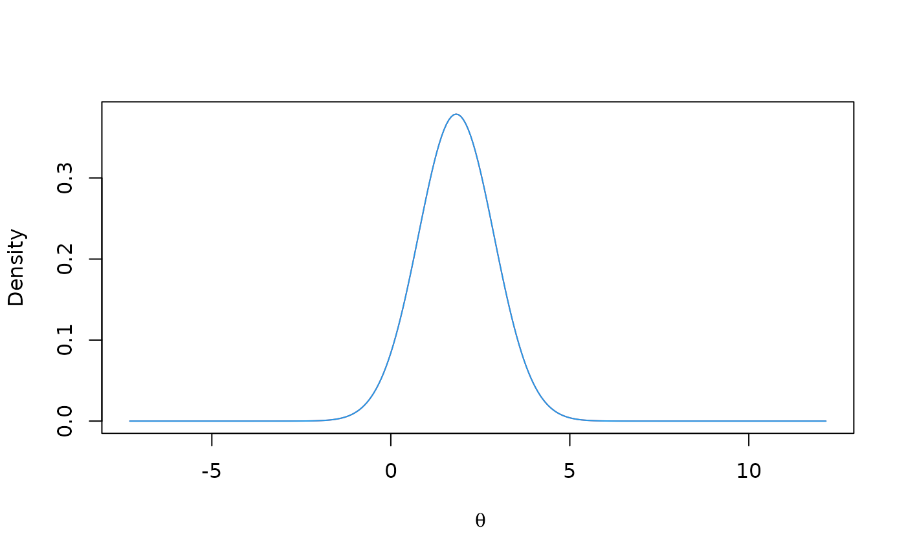

gsCP.RdgsCP() computes conditional boundary crossing probabilities at future
planned analyses for a given group sequential design assuming an interim
z-statistic at a specified interim analysis. While gsCP() is designed
toward computing conditional power for a variety of underlying parameter
values, condPower is built to compute conditional power for a
variety of interim test statistic values which is useful for sample size
adaptation (see ssrCP). gsPP() averages conditional
power across a posterior distribution to compute predictive power.
gsPI() computes Bayesian prediction intervals for future analyses
corresponding to results produced by gsPP(). gsPosterior()
computes the posterior density for the group sequential design parameter of
interest given a prior density and an interim outcome that is exact or in an
interval. gsPOS() computes the probability of success for a trial
using a prior distribution to average power over a set of theta
values of interest. gsCPOS() assumes no boundary has been crossed
before and including an interim analysis of interest, and computes the
probability of success based on this event. Note that gsCP() and
gsPP() take only the interim test statistic into account in computing
conditional probabilities, while gsCPOS() conditions on not crossing
any bound through a specified interim analysis.
See Conditional power section of manual for further clarification. See also Muller and Schaffer (2001) for background theory.
For gsPP(), gsPI(), gsPOS() and gsCPOS(), the
prior distribution for the standardized parameter theta () for a
group sequential design specified through a gsDesign object is specified
through the arguments theta and wgts. This can be a discrete
or a continuous probability density function. For a discrete function,
generally all weights would be 1. For a continuous density, the wgts
would contain integration grid weights, such as those provided by
normalGrid.
For gsPosterior, a prior distribution in prior must be
composed of the vectors z density. The vector z
contains points where the prior is evaluated and density the
corresponding density or, for a discrete distribution, the probabilities of
each point in z. Densities may be supplied as from
normalGrid() where grid weights for numerical integration are
supplied in gridwgts. If gridwgts are not supplied, they are
defaulted to 1 (equal weighting). To ensure a proper prior distribution, you
must have sum(gridwgts * density) equal to 1; this is NOT checked,
however.
gsCP(x, theta = NULL, i = 1, zi = 0, r = 18) gsPP( x, i = 1, zi = 0, theta = c(0, 3), wgts = c(0.5, 0.5), r = 18, total = TRUE ) gsPI( x, i = 1, zi = 0, j = 2, level = 0.95, theta = c(0, 3), wgts = c(0.5, 0.5) ) gsPosterior(x = gsDesign(), i = 1, zi = NULL, prior = normalGrid(), r = 18) gsPOS(x, theta, wgts) gsCPOS(i, x, theta, wgts)
| x | An object of type |
|---|---|
| theta | a vector with \(\theta\) value(s) at which conditional
power is to be computed; for |
| i | analysis at which interim z-value is given; must be from 1 to
|
| zi | interim z-value at analysis i (scalar) |
| r | Integer value controlling grid for numerical integration as in
Jennison and Turnbull (2000); default is 18, range is 1 to 80. Larger
values provide larger number of grid points and greater accuracy. Normally
|
| wgts | Weights to be used with grid points in |
| total | The default of |
| j | specific analysis for which prediction is being made; must be
|
| level | The level to be used for Bayes credible intervals (which
approach confidence intervals for vague priors). The default
|
| prior | provides a prior distribution in the form produced by
|
gsCP() returns an object of the class gsProbability.
Based on the input design and the interim test statistic, the output
gsDesign object has bounds for test statistics computed based on solely on
observations after interim i. Boundary crossing probabilities are
computed for the input \(\theta\) values. See manual and examples.
gsPP() if total==TRUE, returns a real value indicating the predictive
power of the trial conditional on the interim test statistic zi at
analysis i; otherwise returns vector with predictive power for each
future planned analysis.
gsPI() returns an interval (or point estimate if level=0)
indicating 100level% credible interval for the z-statistic at
analysis j conditional on the z-statistic at analysis i<j.
The interval does not consider intervending interim analyses. The
probability estimate is based on the predictive distribution used for
gsPP() and requires a prior distribution for the group sequential
parameter theta specified in theta and wgts.
gsPosterior() returns a posterior distribution containing the the
vector z input in prior$z, the posterior density in
density, grid weights for integrating the posterior density as input
in prior$gridwgts or defaulted to a vector of ones, and the product
of the output values in density and gridwgts in wgts.
gsPOS() returns a real value indicating the probability of a positive
study weighted by the prior distribution input for theta.
gsCPOS() returns a real value indicating the probability of a
positive study weighted by the posterior distribution derived from the
interim test statistic and the prior distribution input for theta
conditional on an interim test statistic.
The manual is not linked to this help file, but is available in library/gsdesign/doc/gsDesignManual.pdf in the directory where R is installed.
Jennison C and Turnbull BW (2000), Group Sequential Methods with Applications to Clinical Trials. Boca Raton: Chapman and Hall.
Proschan, Michael A., Lan, KK Gordon and Wittes, Janet Turk (2006), Statiscal Monitoring of Clinical Trials. NY: Springer.
Muller, Hans-Helge and Schaffer, Helmut (2001), Adaptive group sequential designs for clinical trials: combining the advantages of adaptive and classical group sequential approaches. Biometrics;57:886-891.
#> Asymmetric two-sided group sequential design with #> 90 % power and 2.5 % Type I Error. #> Upper bound spending computations assume #> trial continues if lower bound is crossed. #> #> Sample #> Size ----Lower bounds---- ----Upper bounds----- #> Analysis Ratio* Z Nominal p Spend+ Z Nominal p Spend++ #> 1 0.220 -0.90 0.1836 0.0077 3.25 0.0006 0.0006 #> 2 0.441 -0.04 0.4853 0.0115 2.99 0.0014 0.0013 #> 3 0.661 0.69 0.7563 0.0171 2.69 0.0036 0.0028 #> 4 0.881 1.36 0.9131 0.0256 2.37 0.0088 0.0063 #> 5 1.101 2.03 0.9786 0.0381 2.03 0.0214 0.0140 #> Total 0.1000 0.0250 #> + lower bound beta spending (under H1): #> Hwang-Shih-DeCani spending function with gamma = -2. #> ++ alpha spending: #> Hwang-Shih-DeCani spending function with gamma = -4. #> * Sample size ratio compared to fixed design with no interim #> #> Boundary crossing probabilities and expected sample size #> assume any cross stops the trial #> #> Upper boundary (power or Type I Error) #> Analysis #> Theta 1 2 3 4 5 Total E{N} #> 0.0000 0.0006 0.0013 0.0028 0.0062 0.0117 0.0226 0.5726 #> 3.2415 0.0417 0.1679 0.2806 0.2654 0.1444 0.9000 0.7440 #> #> Lower boundary (futility or Type II Error) #> Analysis #> Theta 1 2 3 4 5 Total #> 0.0000 0.1836 0.3201 0.2700 0.1477 0.0559 0.9774 #> 3.2415 0.0077 0.0115 0.0171 0.0256 0.0381 0.1000# set up a prior distribution for the treatment effect # that is normal with mean .75*x$delta and standard deviation x$delta/2 mu0 <- .75 * x$delta sigma0 <- x$delta / 2 prior <- normalGrid(mu = mu0, sigma = sigma0) # compute POS for the design given the above prior distribution for theta gsPOS(x = x, theta = prior$z, wgts = prior$wgts)#> [1] 0.5954771# assume POS should only count cases in prior where theta >= x$delta/2 gsPOS(x = x, theta = prior$z, wgts = prior$wgts * (prior$z >= x$delta / 2))#> [1] 0.5554313# assuming a z-value at lower bound at analysis 2, what are conditional # boundary crossing probabilities for future analyses # assuming theta values from x as well as a value based on the interim # observed z CP <- gsCP(x, i = 2, zi = x$lower$bound[2]) CP#> Lower bounds Upper bounds #> Analysis N Z Nominal p Z Nominal p #> 1 1 1.25 0.8952 4.71 0.0000 #> 2 1 1.96 0.9750 3.39 0.0003 #> 3 1 2.64 0.9959 2.64 0.0041 #> #> Boundary crossing probabilities and expected sample size assume #> any cross stops the trial #> #> Upper boundary (power or Type I Error) #> Analysis #> Theta 1 2 3 Total E{N} #> -0.0554 0e+00 0.0003 0.0019 0.0022 0.2 #> 0.0000 0e+00 0.0003 0.0022 0.0026 0.2 #> 3.2415 7e-04 0.1038 0.2631 0.3677 0.4 #> #> Lower boundary (futility or Type II Error) #> Analysis #> Theta 1 2 3 Total #> -0.0554 0.8999 0.0841 0.0138 0.9978 #> 0.0000 0.8952 0.0872 0.0150 0.9974 #> 3.2415 0.3950 0.1368 0.1006 0.6323# summing values for crossing future upper bounds gives overall # conditional power for each theta value CP$theta#> [1] -0.05536767 0.00000000 3.24151555#> [,1] #> [1,] 0.002238566 #> [2,] 0.002561570 #> [3,] 0.367657693# compute predictive probability based on above assumptions gsPP(x, i = 2, zi = x$lower$bound[2], theta = prior$z, wgts = prior$wgts)#> [1] 0.06730167# if it is known that boundary not crossed at interim 2, use # gsCPOS to compute conditional POS based on this gsCPOS(x = x, i = 2, theta = prior$z, wgts = prior$wgts)#> [1] 0.6114033# 2-stage example to compare results to direct computation x <- gsDesign(k = 2) z1 <- 0.5 n1 <- x$n.I[1] n2 <- x$n.I[2] - x$n.I[1] thetahat <- z1 / sqrt(n1) theta <- c(thetahat, 0, x$delta) # conditional power direct computation - comparison w gsCP pnorm((n2 * theta + z1 * sqrt(n1) - x$upper$bound[2] * sqrt(n1 + n2)) / sqrt(n2))#> [1] 0.03579292 0.01067483 0.51555676gsCP(x = x, zi = z1, i = 1)$upper$prob#> [,1] [,2] [,3] #> [1,] 0.03579292 0.01067483 0.5155568# predictive power direct computation - comparison w gsPP # use same prior as above mu0 <- .75 * x$delta * sqrt(x$n.I[2]) sigma2 <- (.5 * x$delta)^2 * x$n.I[2] prior <- normalGrid(mu = .75 * x$delta, sigma = x$delta / 2) gsPP(x = x, zi = z1, i = 1, theta = prior$z, wgts = prior$wgts)#> [1] 0.1556447t <- .5 z1 <- .5 b <- z1 * sqrt(t) # direct from Proschan, Lan and Wittes eqn 3.10 # adjusted drift at n.I[2] pnorm(((b - x$upper$bound[2]) * (1 + t * sigma2) + (1 - t) * (mu0 + b * sigma2)) / sqrt((1 - t) * (1 + sigma2) * (1 + t * sigma2)))#> [1] 0.1556447# plot prior then posterior distribution for unblinded analysis with i=1, zi=1 xp <- gsPosterior(x = x, i = 1, zi = 1, prior = prior) plot(x = xp$z, y = xp$density, type = "l", col = 2, xlab = expression(theta), ylab = "Density")# add posterior plot assuming only knowlede that interim bound has # not been crossed at interim 1 xpb <- gsPosterior(x = x, i = 1, zi = 1, prior = prior) lines(x = xpb$z, y = xpb$density, col = 4)# prediction interval based in interim 1 results # start with point estimate, followed by 90% prediction interval gsPI(x = x, i = 1, zi = z1, j = 2, theta = prior$z, wgts = prior$wgts, level = 0)#> [1] 1.081745gsPI(x = x, i = 1, zi = z1, j = 2, theta = prior$z, wgts = prior$wgts, level = .9)#> [1] -0.3793133 2.5428090